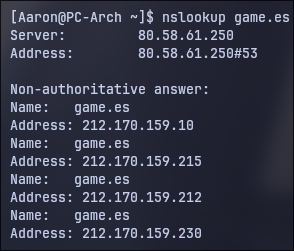
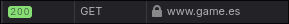
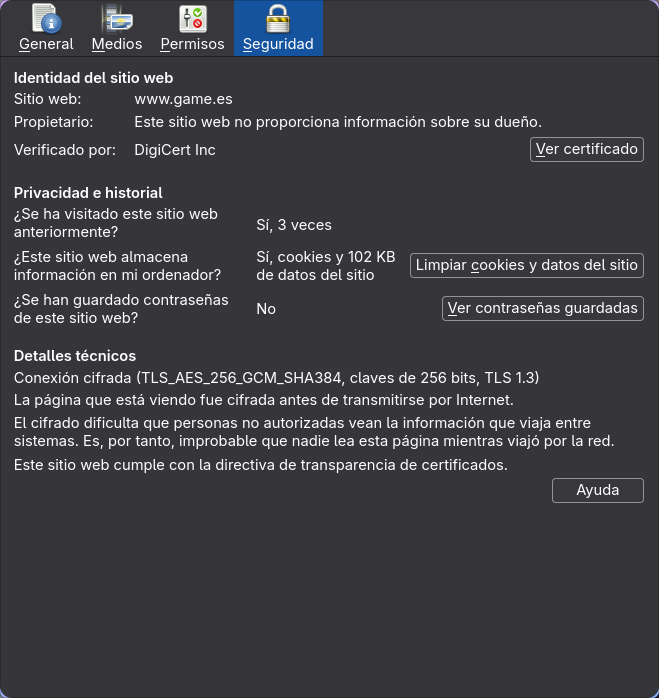
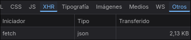

La web que he elegido
He elegido GAME porque es una página la cual he usado con anterioridad.
Glosario
| Término | Definición con mis palabras | Ejemplo en mi web |
|---|---|---|
| Cliente | El equipo el cual realiza la petición al servidor donde se aloja la web. Dicho en otras palabras yo introduciendo la URL en el navegador. | No aplica |
| Servidor | Aquí pueden haber multiples servicios activos, por ejemplo puede estar la web, una base de datos, un servidor de almacenamiento. Es donde mandamos las peticiones, y nos responde con lo que necesitamos. | Podría ser donde se guarda la base de datos de los clientes. |
| Servidor web | Es donde está montada toda la estructura de la web, donde están los archivos que conforman la propia web, servicios que utilice la web, puede contener la base de datos de la tienda. | Sería el servidor en el que esté alojada la web. |
| Apache | Es un software gratuito que se encarga de recibir las peticiones y mandar los archivos/datos necesarios. | No aplicable, ya que no se sobre cual software está monstada la página. |
| URL | Es la dirección que tú pones en tu navegador, donde se encuentra el nombre de dominio, y además cuando estás navegando por la página, la URL cambia para solicitarle al servidor los archivos que estén en ese directorio. | En este caso sería la URL de la página (https://www.game.es/) |
| Protocolo | Es el conjunto de reglas que permiten la clara comunicación entre el navegador y el servidor. | Mi página usa HTTPS |
| Dominio | Es el nombre de una página, en vez de tener que recordar todas las IPs de las páginas, te acuerdas de sus nombres, y ya buscas en el navegador por el nombre. | En mi página corresponde a "game.es" |
| Ruta | Se podría decir como si fuera la dirección de un archivo, y en una web los archivos están en distintas rutas, por eso que la URL cambia cuando vamos de una zona de la página a otra, porque cambia la ruta. | Esta sería la URL completa, que se divide en el dominio y la ruta "https://www.game.es/descubre/estrenosdelasemana" |
| Dirección IP | La dirección IP, es la dirección real en internet de la página que buscas. Siendo lo que buscas una manera más fácil de recordarlo, pero solo sirve para buscar esa IP y entonces hacer la solucitud al servidor, | Tiene varias IPs según el análisis que se acaba de realizar. siendo la primera en aparecer "212.170.159.10" |
| DNS | Es el servicio de nombre de dominio, el encargado de hacer la traducción de un dominio a una ip y viceversa. | En mi web la IP del servidor del DNS es "80.58.61.250" |
| HTTP | Es un protocolo usado para la comunicación entre cliente y servidor. | No aplicable, ya que la página que elegí usa https. |
| HTTPS | Es el mismo protocolo que el anterior, pero a este se le añade la caracterítica de seguridad, codificando los datos | La página que elegí si usa este protocolo |
| Puerto | Son una especie de puertas digitales por donde pasa el tráfico para cada servicio. | No sé cual puerto está usando actualmente, pero segurímo está usandoo el 443. |
| Petición | Es el mensaje que envías tú, como cliente, al servidor, pidiendo datos. | Un ejemplo sería cuando hago click en el menú de navegación, y me tiene que llevar a otra página dentro de la web, y el navegador realiza la petición pidiendo los nuevos archivos. |
| Respuesta | Serían los datos que envía el servidor respondiendo a la petición hecho con anterioridad. | El mismo ejemplo de antes, hago clivk en el menú de navegación haciendo una petición, la respuesta serían los datos mandados por el servidor. |
| Código de estado | Es un codigo de 3 dígitos que envía el servidor en la respuesta, indicando si la petición se completó con éxito o no, a groso modo. | Un ejemplo puede ser el código "200" que indica que todo fue correcto, y se está completando la petición. podría ser al enviar un formulario, llegó correctamente y se están guardando los datos. |
| Web estática | Es una web, la cual cuando quieres ver un nuevo texto, hay que recargarla entera, y no solo la zona donde se cargará el nuevo texto. | Al entrar a cualquier artículo a la venta, se recarga la página entera. |
| Web dinámica | Es una la cual solo recarga la zona específica que hayas solicitado. | Si bajas un poco en la página, se puede encontrar un menú de navegación que al hacer click en las distintas secciones, y solo recarga esa zona. |
| PHP | Es un lenguaje que se utiliza principalmente para crear páginas web dinámicas, procesar formularios, gestionar sesiones de usuario y conectarse a bases de datos. | No aplica, ya |
| Base de datos | ✏️ Escriban aquí su definición | ✏️ Escriban aquí el ejemplo en su web |
| LAMP | ✏️ Escriban aquí su definición | ✏️ Escriban aquí el ejemplo en su web |
| JSON | ✏️ Escriban aquí su definición | ✏️ Escriban aquí el ejemplo en su web |
| XML | ✏️ Escriban aquí su definición | ✏️ Escriban aquí el ejemplo en su web |
Evidencias



